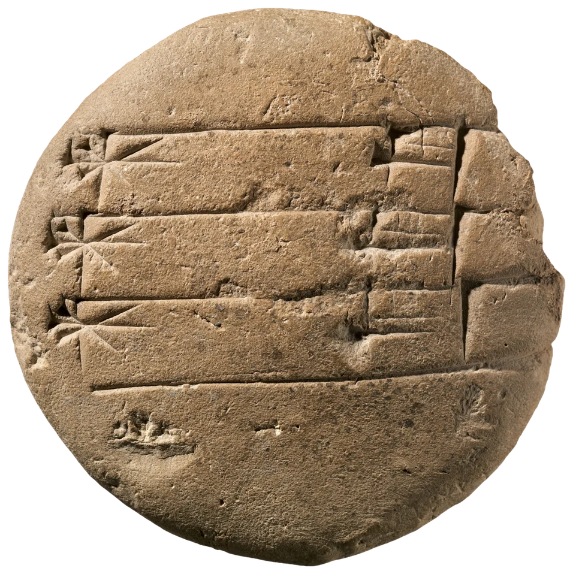
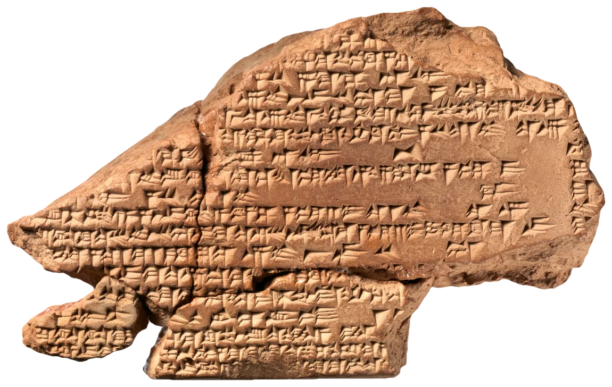

The kings of Assyria wrote on their walls. Ashurnasirpal II rebuilt Kalhu on the Tigris, the mound now called Nimrud, and moved his court there around 879 BCE. He lined the rooms of his new palace with slabs of gypsum carved in low relief: the king with his bowl and his bow, attendants with daggers and fly-whisks, winged spirits with a bucket of holy water. Across every slab, straight through the robes and the beards, the masons cut the same text: his names and his titles, his wars, the building of the palace, over and over, room after room. Scholars call it the Standard Inscription. It was not put there to be read so much as to be there, like a name woven into the hem of a cloth.

A scribe in Babylon wrote with a reed. He cut the end square, or nearly, pressed its corner into a pad of damp clay held in the other hand, and lifted it out again. That was a wedge, and the wedge was the whole of the alphabet: every sign was a small cluster of them, upright, lying down, slanting, or a hook made with the corner alone, and a practised hand could set down three or four a second without looking, turning the tablet a little at the end of each line. Children learned it the same way, on round tablets the size of a palm like this one. The teacher wrote a line, the pupil copied it underneath, and the clay, as long as it had not been fired, could always be wetted, smoothed with the thumb and written on again.
That is why so much of it is lost, and why so much survives. A tablet dried in the sun is only hard mud, and rain or a damp floor will take it back. The ones that last are very often the ones that burned. When the Medes and the Babylonians sacked Nineveh in 612 BCE, the palace fell in on the library of Ashurbanipal, and the fire that ended the Assyrian empire baked thousands of its tablets hard under the rubble, where Layard’s diggers found them in the winter of 1850. Ebla, Mari, Ugarit: the archives we can read are, more often than not, the ones somebody’s enemies set alight.

Under the soft, even light of a museum, worn carving goes flat. A wedge is a small three-sided pit, and in light from everywhere at once each face is as bright as the next, so the sign dissolves into the grain of the clay. The people who read these things carry a lamp, or wait for the sun to go low, and hold the light nearly level with the surface and move it. Now one face of every wedge catches the light and another falls into black; each sign becomes a little constellation of bright and dark triangles, and a line that could not be seen a moment ago can be read from across the room. Turn the lamp and other marks come up. A stroke that runs along the light disappears and a stroke across it leaps out, so the reader turns it again, and again, and writes down what all the lights agree on.
Reflectance transformation imaging does the same thing with a camera. The tablet is fixed beneath it and photographed forty or fifty times, each time lit by a flash from a different point on an imaginary dome above, and the software works out, for every pixel, how its brightness changes as the light moves, and so how the surface there is turned. Afterwards anyone can sit at a screen and draw a virtual lamp across a tablet in London or Philadelphia, often more legibly than in the hand, and signs that defeated generations of readers have come up out of the clay this way. This page does it with one photograph and a good deal of guesswork: the shape of each object was estimated from the way the studio light fell on it, then the studio light was taken away, and your hand put in its place.